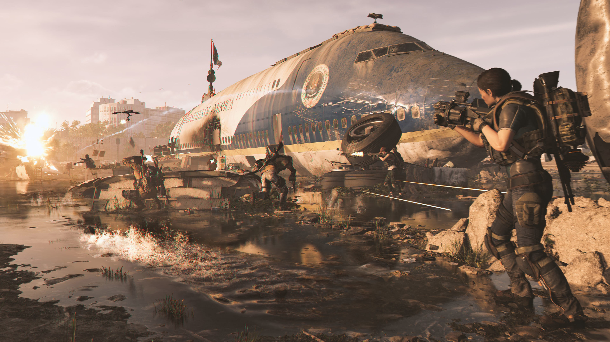
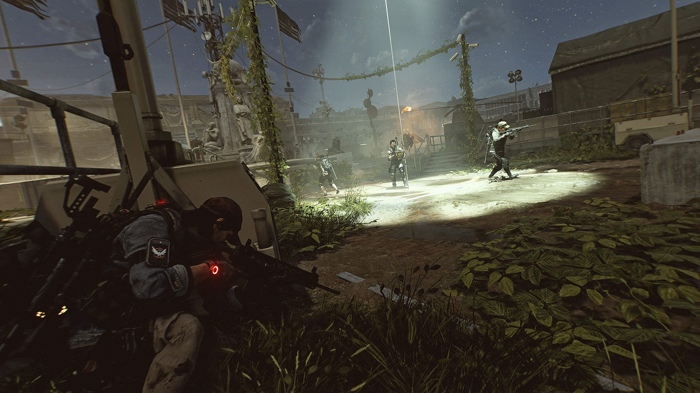

Tom Clancy's The Division 2 was released on the 15th of March 2019 on PlayStation 4, Xbox One, Microsoft Windows and Google Stadia by Massive Entertainment a studio owned by Ubisoft.
The events of Tom Clancy's The Division 2 take place during the summer of Washington, D.C., 7 months after the events of the Dollar Flu, which took place in the winter in New York City. The virus has now spread to Washington, D.C.
Washington, D.C. has been recreated to be as authentic as possible complete with well-known landmarks and buildings. Despite the possible controversy, Ubisoft has stated that the choice of location was not one of politics despite the fact the chosen location is the nation's capital.
The team behind The Division 2 made the game with the community in mind, they repaired everything that was bad from the first game and made this one, the definitive version of The Division series.

Plot
Seven months after the Green Poison outbreak, several Strategic Homeland Division (SHD) agents are defending a civilian settlement from a bandit attack when the SHD Network, the system controlling their advanced technology and communications, suddenly shuts down and they receive a Division distress call from Washington, D.C. The player’s agent makes their way to the city where The Division and the remains of the local Joint Task Force have set up their Base of Operations in The White House. After defeating an attack on the White House shortly after arriving in the city, the agent is briefed on the general situation by Manny Ortega, The Division controller for D.C. The agent learns that much of the city is under the control of three main enemy factions: the Hyenas, a loosely organized group of several gangs, criminals, and anarchists who seek to take advantage of the chaos, the Outcasts, a fanatical group made up of the survivors of the Roosevelt Island quarantine zone, whom seek to exact revenge on those they believe responsible for their imprisonment and eventual infection, and the True Sons, a highly organized and ruthless group of former Joint Task Force personnel, paramilitaries, and other traitors who seek to gain control over the entire capital. Ortega instructs the agent to work with fellow agent Alani Kelso to help assist civilian settlements, fight the various enemy groups, and restore the SHD Network.

Features
Specializations - End game content that allows players to continue character and weapon progression with elite weapons and skill trees. At level 30, players will be able to unlock Survivalist, Demolitionist, Firewall, Technician, Gunner or Sharpshooter.
Settlements - Groups of civilian survivors that offer upgrades, missions and projects.
New gear that will include collectible aesthetic sets to help create unique looks for the player's character.
Clans, PVP and new Co-Op Activities
Photo Mode - Photo Mode will be available at launch. Several players requested that there had to be a Photo Mode option in Tom Clancy's The Division 2.
New Progression Classes: Survivalist, Demolitionist, Sharpshooter, Gunner, Technician and Firewall.
New Skills: Assault Drone, Chem Launcher, Hive, Firefly, Sniper Turret and Shock Trap.

Dark Zones
In Tom Clancy's The Division 2, players have the ability to enter one of several Dark Zones. These are areas in the game with higher level enemies, rogue agents, but better loot than anywhere else in the game. While in a Dark Zone, the player may choose to go rogue for various reasons. This will enable PvP combat and have other players target you.

Fun fact, the producer of the game is romanian!